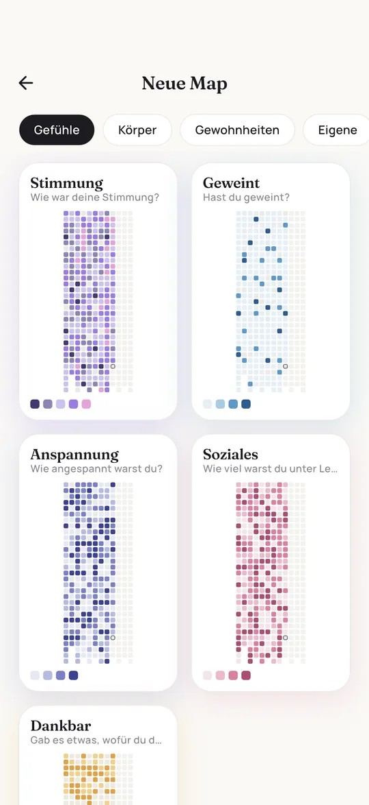

Mood Tracker Ideen: 8 Layouts für dein Bullet Journal
Der Mood Tracker gehört zu den beliebtesten Seiten im Bullet Journal und zu denen, die am häufigsten im Februar einschlafen. Hier findest du acht Layouts von zwei Minuten bis Bastelprojekt, Monatsthemen und Ideen, was du außer Stimmung tracken kannst.
Warum die meisten Mood Tracker im Februar einschlafen
Selten aus Faulheit. Meist ist der Tracker zu aufwendig für das, was er zurückgibt. Eine aufwendige Zeichnung braucht jeden Monat eine Stunde, und nach drei vergessenen Tagen sieht die Seite kaputt aus. Die ehrliche Frage vor der Wahl des Layouts lautet also: Wie viele Minuten im Monat will ich wirklich dafür aufwenden?
Die gute Nachricht: Die einfachsten Layouts sind auch die nützlichsten. Ein schlichtes Raster mit fünf Farben zeigt Muster deutlicher als ein wunderschönes Mandala.
Acht Layouts, von schlicht bis kreativ
1. Jahr in Pixeln
Ein Kästchen pro Tag für das ganze Jahr auf einer Doppelseite. Zeigt Jahreszeiten und lange Phasen am besten.
Aufwand beim Zeichnen: gering. Aufwand pro Tag: mittel.
2. Monatskalender
Ein kleiner Kalender pro Monat, jeder Tag wird ausgemalt. Schnell angelegt und passt neben die Monatsübersicht.
Aufwand beim Zeichnen: gering. Aufwand pro Tag: gering.
3. Stimmungskreis
Ein Kreis aus 28 bis 31 Tortenstücken, eins pro Tag. Sieht toll aus, ist aber etwas fummelig zu zeichnen.
Aufwand beim Zeichnen: mittel. Aufwand pro Tag: mittel.
4. Liniendiagramm
Ein Punkt pro Tag auf einer Skala von unten nach oben, verbunden zu einer Linie. Zeigt Hochs und Tiefs am klarsten.
Aufwand beim Zeichnen: gering. Aufwand pro Tag: gering.
5. Ausmalbild
Blätter an einem Ast, Bücher im Regal, Schuppen eines Fischs: eine Form pro Tag. Hübsch, aber das Zeichnen dauert.
Aufwand beim Zeichnen: hoch. Aufwand pro Tag: hoch.
6. Wochenprotokoll
Eine Zeile pro Tag mit Farbpunkt und ein paar Worten. Gut, wenn du auch eine kurze Notiz willst.
Aufwand beim Zeichnen: gering. Aufwand pro Tag: gering.
7. Balkendiagramm
Zwei schmale Balken pro Tag, zum Beispiel Stimmung und Energie. Zeigt, wie zwei Dinge zusammenhängen.
Aufwand beim Zeichnen: mittel. Aufwand pro Tag: gering.
8. Stimmung plus Habit Tracker
Zeilen für Gewohnheiten und darunter ein Stimmungspunkt pro Tag. Zeigt, ob gute Tage und Gewohnheiten zusammenfallen.
Aufwand beim Zeichnen: mittel. Aufwand pro Tag: gering.
Welches passt zu mir? Für den Einstieg eignen sich der Monatskalender oder das Liniendiagramm. Wenn du dein ganzes Jahr auf einer Seite sehen willst, nimm direkt unsere kostenlose Mood Tracker Vorlage.
In 15 Minuten eingerichtet
- Frage festlegen. Stimmung ist der Klassiker. Schreib die Frage oben auf die Seite, damit du jeden Tag dieselbe beantwortest.
- Zuerst die Legende. Drei bis sechs Stimmungen mit je einer Farbe, die Bedeutung daneben geschrieben.
- Den Rahmen mit Bleistift vorzeichnen. Das Punkteraster im Journal hilft, die Kästchen gleich groß zu halten. Erst nachziehen, wenn es passt.
- Tage nummerieren. Kleine Zahlen bewahren dich davor, um 23 Uhr das falsche Kästchen auszumalen.
- Platz für eine Monatsnotiz lassen. Zwei Zeilen unten für das, was auffiel. In einem Jahr sind diese Notizen Gold wert.
Ideen für Monatsthemen
Wenn du den Tracker jeden Monat neu zeichnest, hält ein Thema die Sache frisch. Diese Motive lassen sich gut als Ausmalbild mit einer Form pro Tag zeichnen:
| Monat | Motiv |
|---|---|
| Januar | Schneeflocken oder Fäustlinge |
| Februar | Herzen oder Bonbons |
| März | Keimende Samen oder Drachen |
| April | Regentropfen unter einem Schirm |
| Mai | Blütenblätter |
| Juni | Erdbeeren oder Bienen |
| Juli | Eiskugeln oder Sonnenstrahlen |
| August | Muscheln, Wellen oder Melonenstücke |
| September | Bücher im Regal oder Äpfel |
| Oktober | Herbstblätter oder Kürbisse |
| November | Teetassen oder Eicheln |
| Dezember | Christbaumkugeln oder Sterne |
Was du außer Stimmung tracken kannst
Jedes Thema, das du mit einem Wort beantworten kannst und das sich von Tag zu Tag ändert, eignet sich. Hier sind 22 Ideen mit Stufen von niedrig nach hoch, die du direkt übernehmen kannst:
| Thema | Stufen |
|---|---|
| Stimmung | Stürmisch, Grau, Ruhig, Gut, Strahlend |
| Anspannung | Tiefenentspannt, Etwas nervös, Angespannt, Panik |
| Stress | Entspannt, Viel los, Gestresst, Überfordert |
| Geweint | Trocken, Feuchte Augen, Geweint, Wasserfall |
| Dankbarkeit | Nicht heute, Ein bisschen, Sehr dankbar |
| Schlafqualität | Wach gelegen, Unruhig, Okay, Erholsam, Wie ein Stein |
| Schlafdauer | Unter 6 Std., 6 bis 7 Std., 7 bis 8 Std., Über 8 Std. |
| Träume | Keiner, Friedlich, Abenteuerlich, Surreal, Romantisch, Albtraum |
| Energie | Akku leer, Schlapp, Wach, Aufgedreht |
| Zyklus | Keine, Schmierblutung, Leicht, Mittel, Stark |
| Kopfschmerzen | Keine, Leicht, Stark, Migräne |
| Sport | Couch-Tag, Spaziergang, Workout, Beast Mode |
| Zeit draußen | Gar nicht, Ein bisschen, Über eine Stunde |
| Wasser | Ausgedörrt, Okay, Gut getrunken |
| Kaffee | Keiner, Eine Tasse, Zwei Tassen, Drei oder mehr |
| Alkohol | Nüchtern, Ein Glas, Beschwipst, Kater-Garantie |
| Lesen | Nichts, Ein paar Seiten, Versunken |
| Bildschirmzeit | Digital Detox, Normal, Zu viel, Doomscrolling |
| Wetter | Sonnig, Bewölkt, Regen, Schnee, Sturm |
| Temperatur | Unter 0 °C, 0 bis 10 °C, 10 bis 20 °C, 20 bis 30 °C, Über 30 °C |
| Soziales | Me-Time, Kurz gequatscht, Gute Gespräche, Unter Leuten |
| Arbeitstag | Frei, Locker, Normal, Heftig |
Farben, die funktionieren
Für Antworten mit Reihenfolge, also Stimmung, Schlaf oder Energie, nimm eine Farbfamilie von hell nach dunkel. So erkennst du Hochs und Tiefs auf einen Blick. Für Kategorien wie Wetter oder Traumarten nimm deutlich verschiedene Farben. Ein Regenbogen ist für Kategorien schön und für eine Skala verwirrend.
- Stifte vorher testen. Zwei Filzstifte, die im Laden verschieden aussehen, sind auf Papier oft kaum zu unterscheiden.
- Nicht nur Rot gegen Grün. Rot-Grün-Schwäche ist häufig. Mach eine Farbe deutlich heller oder nimm Blau und Orange.
- Weiß bleibt für keine Angabe. Dann heißt ein leeres Kästchen: nicht eingetragen.
- Bedeutung dazuschreiben. Im Dezember weißt du nicht mehr, ob Hellviolett okay oder gut hieß.


Wenn du Tage auslässt
Das passiert allen. Trag die letzten zwei Tage aus dem Gedächtnis nach, lass ältere Lücken weiß und mach weiter. Reiß die Seite nicht raus. Ein Tracker mit Lücken zeigt dir mehr als gar keiner, und die Lücken erzählen oft selbst etwas: volle Wochen, Urlaub, schwierige Phasen.
Wenn du oft auslässt, mach den täglichen Schritt kleiner. Verleg den Tracker auf die Seite, die du sowieso jeden Tag aufschlägst, oder nimm ein Layout, das zehn Sekunden statt einer Minute braucht. Oder lass dich vom Handy erinnern: Pixi fragt jeden Morgen einmal nach und malt das Raster für dich.
Fragen und Antworten
Welcher Mood Tracker ist am einfachsten?
Ein Monatskalender oder ein einfaches Liniendiagramm. Beide sind in wenigen Minuten angelegt und brauchen pro Tag nur ein paar Sekunden.
Wie erstelle ich einen Mood Tracker im Bullet Journal?
Layout wählen, eine Legende mit drei bis sechs Stimmungen und Farben anlegen, den Rahmen mit Bleistift vorzeichnen, die Tage nummerieren und jeden Tag ein Feld ausmalen. Verpasste Tage innerhalb von zwei Tagen nachtragen, ältere frei lassen.
Welche Farben nehme ich für meinen Mood Tracker?
Für Stimmung, Schlaf oder Energie eine Farbfamilie von hell nach dunkel, für Kategorien wie Wetter deutlich verschiedene Farben. Klassisch stehen Gelb für fröhlich, Blau für traurig, Rot für wütend, Grün für ausgeglichen und Grau für müde.
Monatlich oder jährlich tracken?
Monatliche Tracker sind leichter anzufangen und können jeden Monat ein neues Motiv bekommen. Ein Jahr in Pixeln zeigt lange Muster und Jahreszeiten viel besser. Viele machen beides.

Geschrieben von Caspar Baumeister. Ich bin Indie-Entwickler in Berlin und baue Pixi allein. Ich lese jede Nachricht. Wenn hier etwas unklar ist oder du eine Idee für die App hast, schreib mir: @casparbuilds auf X oder per E-Mail.